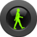

|  | Humansense Android App |
Thank you for participating in our data collection process. To participate, you must first sign a Consent Form, and email a copy to Jordan Frank. I'll co-sign it and send you back a copy.
The following instructions should have you up and running in a few minutes:
First, you need to enable non-market apps. Go to Settings ⇒ Applications, then enable "Unknown Sources".
The application can be installed by following the link: http://bit.ly/yahQm7, or clicking on or scanning the bar-code in the top-right corner of this page.
Everything should be set up properly by default. If you want to control what is logged, you can go into the settings. In order to make the location labeling easy, I've made a widget that can be put right on the home screen. To do that, long-press on a blank region of the home screen, then choose "Add Widget", then select the "Location Labeler" widget, which should have the same icon as the HumanSense application (little green walking person). Place that on the home screen, and you should see something that says "Where are you now?" Clicking on that should open a dialog that lets you select a location that you've already entered, or if you go to "Other...", then you can add a new location name, which will be saved for easy selection in the future.
The rules for location labeling are simple, only label a location that you remain in for at least one minute, and remain in the location for at least 30 seconds after labeling it. That will help me associate the labels with the right sensor data. The more often you label your current location, the better. As a rule of thumb, please try to label your location once every few hours when stationary, or whenever you arrive at a new location where you will remain for at least one minute. I would like labels to be fairly fine-grained, so please state the room that you are in, but also include the building. Examples of useful labels are:
The application is set to run when the phone boots up. It is also set to only upload data over a Wifi connection, so it will not use your cellular data plan. The following data is being collected by default: Wifi signals, GSM signals, GPS information, and any location labels that you provide. All other information (call data, sms messaging data, web browsing or email usage) are not collected. The data is transmitted to a database that resides on an encrypted partition on my workstation at McGill University, and only I have the password. No personal information other than what can be deduced from the Wifi, GSM, and GPS data will be collected (i.e., your name, phone number, etc., are not collected). I have a simple web application for browsing the GPS data that you have submitted, and I can provide you access to that upon request.
The default setting is that data is automatically uploaded every 12 hours. By default, data will only be uploaded when you have a Wifi connection (i.e., it will not be uploaded over your cellular data connection). You have the option of turning off the logging service whenever you please, but try to remember to turn it back on again (the service is controlled by the Start/Stop button in the main Application window). If you inadvertently log something that you do not wish to have logged, you can email me at jordan.frank@cs.mcgill.ca, specifying the time period that you would like removed and the Wi-Fi MAC address of the phone (*), and I will remove it immediately. There will always be a 5-day grace period between the time that data is collected and when I will use it in any experiments, and so as long as you email me within the 5-day window after the event happens, I promise that it will never be accessed. If you choose to turn off the automatic uploading of data (Settings ⇒ Upload Automatically), then you also have the ability to delete any logs prior to uploading (they are time-stamped for easy identification). I ask that if you turn off automatic uploading, that you manually upload the data fairly regularly (at least once every 3 days). To manually upload data, make sure you have Wifi network access and then click the Menu button on the phone, then touch the Upload button that should appear.
The application has some additional features, such as a prototype of an activity recognition system and a prototype indoor location detection system. Information on how to try out these features can be found here.
If you have any questions or concerns, please email me at jordan.frank@cs.mcgill.ca.
Thank you for participating,
Jordan Frank
* - The Wifi MAC address may be found by going into the Phone Settings ⇒ About Phone ⇒ Status, then scrolling down to the bottom. However, different phone models have this information in different places, so you should also check in the Wifi Network Settings, or consult the documentation for your particular phone.
Jordan Frank (jordan.frank@cs.mcgill.ca)
JavaDocs are available here. Other documentation to come.
You can download a compiled version, ready to install, here. Included on that page is a QR code for easy installation on your phone. Note that it may not be the most up-to-date version, but it should be fairly current, and is most likely a version that has been tested a bit.
You can download this code for the project in either zip or tar formats.
You can also clone the project with Git by running:
$ git clone git://github.com/jwf/Humansense-Android-App